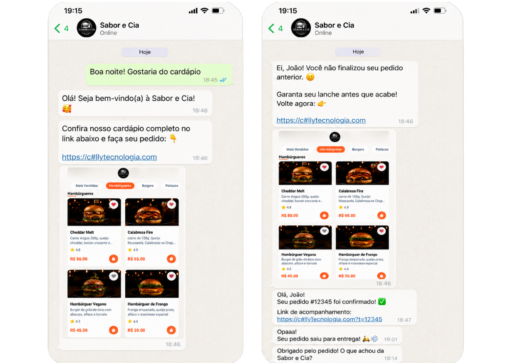
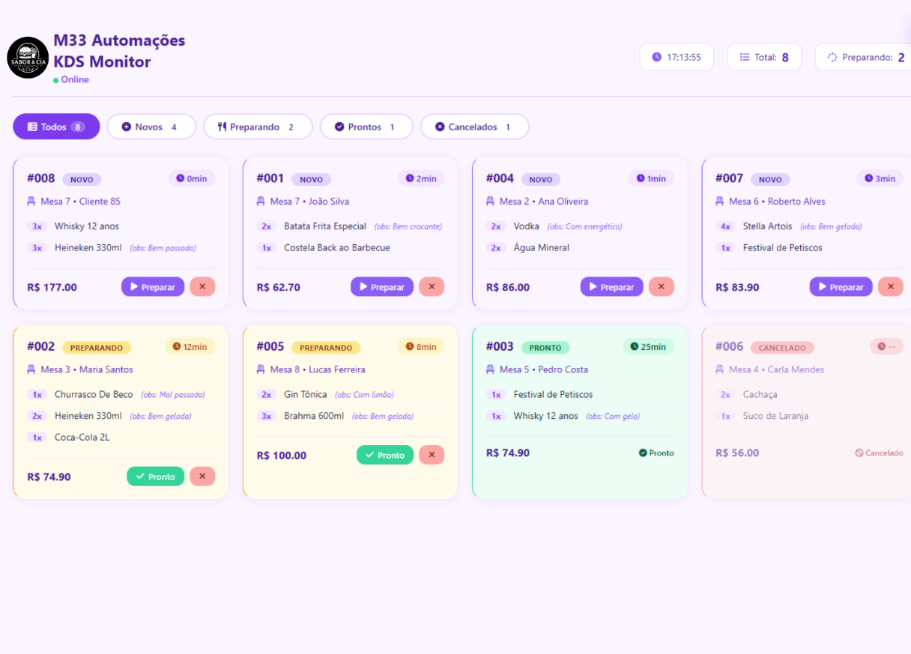
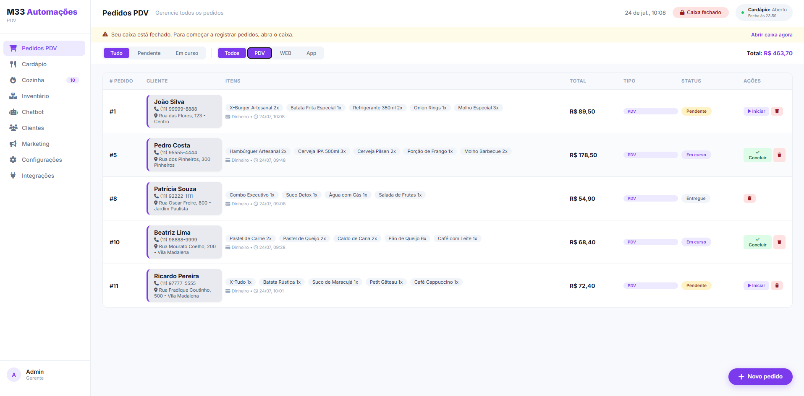
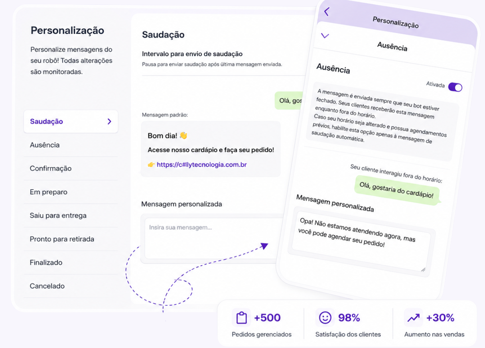

Mais telas dos nossos sistemas
Uma amostra de como ficam o painel, a cozinha, o chatbot e os relatórios no dia a dia do seu negócio.

Chatbot com IA no WhatsApp
KDS - Monitor da cozinha
Painel de pedidos PDV
Personalização do chatbot Cardápio digital no celular
Cardápio digital no celular
 Relatórios em tempo real
Relatórios em tempo real
 Um sistema, todas as telas
Um sistema, todas as telas
Arraste pra o lado pra ver mais telas